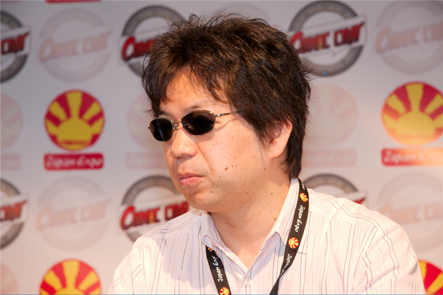

COMPARISON:
Shinichiro Watanabe explores themes of existentialism and redemption in "Cowboy Bebop" and "Samurai Champloo". Both animes contain characters (Faye Valentine from Bebop and Mugen from Champloo) who live by a code of amorality. In thier contorted perspective of reality, human beings get by however they can, regardless of the price in blood. Of course, each of the aforementioned characters endured some form of disassociation from society during thier early lives, ascribing to the cynical viewpoints of Faye and Mugen pertaining to the worlds they inhabit.
Another similarity Cowboy Bebop and Samurai Champloo share is a character (Jet Black from Bebop and Jin from Champloo) disillusioned with his career. Jet, a solemn ex-cop, departs from the police force after experiencing betrayal at the hand of a respected collegue; Jin, a pensive ronin, roams the Japanese countryside after slaying a revered sensei in self-defense.
In the end, all of the protaginists from Watanabe's series make a life-altering decision pertaining to the manner in which they deal with their pasts. Some confront their demons guns-blazing; others promote personal growth via moving beyond thier vindictive insecurities.
CONTRAST:
The most noticeable difference between Cowboy Bebop and Samurai Champloo is the endings. Cowboy Bebop ends on a pessimistic cliffhanger, in which main protagonist Spike Spiegel perishes following his assasination of main antagonist Vicious. Samurai Champloo, on the other hand, ends on a pragmatic silver lining, in which the three protagonists part ways, but reflect on the meaningful nature of their long, arduous journey.